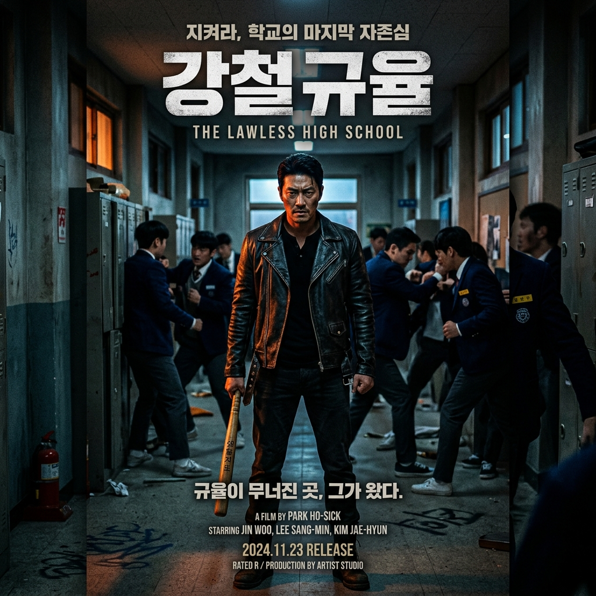

선 넘는 학생, 무력한 교사, 안하무인 학부모로 인해 붕괴된 교육 현장. 가상의 정부 기관인 교권보호국 감독관 나화진과 임한림이 투입되어 무도한 가해자들을 거침없이 응징하고 무너진 교실의 정의를 다시 쓴다.
"체벌 면허를 가진 빅브라더의 등장. 현실적인 교육의 부조리를 찌르려 하지만 결국 자극적인 사이다 쾌감을 향해 내달리는 만화적 판타지."
"깊이 대신 선택한 장르적 쾌감. 원작의 거북한 논란들은 영리하게 걷어내고 교권 침해라는 현실적 소재에 집중해 몰입감과 통쾌함은 확실하다."
"면책된 폭력이라는 위험한 해법. 학교 폭력과 교권 붕괴라는 무거운 주제를 지나치게 단순화하여 자극적인 사적 복수극 형태로 소비하게 만든다."
"원작 웹툰의 자극성을 걷어내고 교권 보호와 사회적 함의에 집중했으나, 물리적 해결 방식의 단순함은 여전하다."
"통쾌한 장르적 쾌감을 장착한 영리한 오락물이지만, 폭력의 정당성에 대한 성찰적 태도는 부족하다."
"원작의 불필요한 혐오 요소를 지워 몰입하기 훨씬 수월하고 통쾌하다. 김무열의 거침없는 액션 싱크로율이 대박!"
"액션은 정말 시원하고 장르적인 쾌감이 넘쳐나지만, 폭력으로 교실을 강제 통제한다는 극단적 해결 방식은 성찰적인 아쉬움을 남긴다."
"학폭 가해자들을 참교육할 때 얻어지는 사이다 카타르시스가 상당하다. 고구마 구간 없이 빠르게 진행되어 가벼운 정주행용으로 최적이다."
"소재는 뉴스에서 볼 법한 무거운 교육 현실인데, 해결 방식은 아주 명료하고 통쾌한 판타지다. 주말에 즐길 수 있는 훌륭한 팝콘 스릴러."
"학원 자경단 장르물로서 최고의 완성도다. 혐오 논란 없이 액션 쾌감에만 몰입할 수 있어 주말 정주행에 딱 좋다."
"체벌을 다룬 다소 충격적이고 논란의 여지가 있는 학원 스릴러로, 공권력이 직접 가하는 사적 응징 방식에 가려진 메시지에 질문을 남긴다."
"한국의 교권 위기에 대한 날카로운 비판과 가슴 뛰는 오락용 액션 사이에서 영리하게 조화를 꾀하며, 대체로 훌륭하게 작동하는 장르물."
"교실 내 폭력을 응징하기 위해 국가 공인 요원을 도입한 자극적 설정이 흥미로우나, 복잡한 현실을 지나치게 도식화했다."
"김무열의 흔들림 없고 세련된 주연 연기와 감각적인 액션 안무가 돋보이는 웰메이드 한국 스릴러."
"공권력이 주도하는 물리력 제압이라는 연극적인 카타르시스가 상당하나, 그 해결 방식에 대한 질문을 끊임없이 던지게 만든다."
"원작의 불필요한 잡음들을 정제하고 오락적인 에너지를 최고조로 끌어올린 만족스러운 시리즈. 김무열은 최고의 연기력을 선보였다."
"단순하고 속도감 넘치는 참교육 복수극의 정석을 보여주는 동시에, 권력이 가질 수 있는 정당성과 그 한계에 대해 묵직한 고민을 남긴다."
"원작의 우려 요소를 신중히 각색하여 드라마로 매끄럽게 안착시켰다. 액션 시퀀스의 안무 연출만큼은 올 상반기 한국 시리즈 중 최정상급이다."
"액션 안무와 연출이 상반기 드라마 중 단연 돋보인다. 고구마 없이 시원시원한 복수극을 기다렸다면 무조건 강추."
"원작 각색을 매끄럽게 잘해서 거북함 없이 시원시원하다. 주연들의 액션 합이 감탄을 자아내게 만든다."